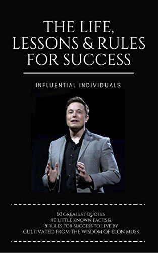
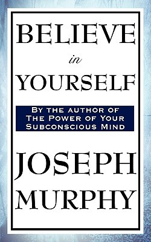

Here are some top books all time to read atleast once.
In this book, some of his best, most detailed and interesting lectures addressed to the youth in various
parts of the country have been collected. These lectures were given to school students, collage students,
those studying in professional collage like engineering and even students outside the country.
Also included here are lectures that he gave to teacher, librarians and caregivers of children.
These lectures make for fascinating reading that will take the youth through key episodes of Dr Kalam's life,
his inspirations and the stories of his mentors. they will also help them understand the challenges and the
country faces and the best way in which they can make a truly compassionate, equal and great society.
Learning How to Fly will tell every reader, in Dr Kalam's own words , that each of us have wings and that we are capable of flying high.
In this book, More heartening still is that it appears to have made a positive impact on thousands of people,
helping them change their lives for the better.
However , Dr.kalam's reasons for writing turning points were slightly different.
Seeing the response generated by Wings of Fire he felt that if in the same way this book too could benefit a few people
it would be well worth the effort. In fact, if even one person or one family find their life changing for
the better because of something gleaned from this book, He is feel fulfilled. Hence this book for you, dear reader.
This is a short and simple book. I didn't have much expectation going into it, but I was pleasantly surprised. First, the writer explains the difference between the conscious and subconscious mind and what role is played by both of them. Then, he makes a very good case by giving us examples by stating the reason our subconscious mind plays a vital role in shaping our life. It got me hooked. It's been said and done and it's nothing I haven't heard before but I was compelled to try out some of the the exercises myself like writing positive affirmations and memorizing them everyday. It's a fun activity and by no means, it'll lead to anything unless you take conscious steps towards your goal which is very important. The approach is positive, effective and motivating.
A very inspiring book on the achievements of Elon Musk and his legacy. There are numerous books out there but these series are the best. You get the entire history of an influential individual which is well researched, thoroughly written and beautifully expressed. A great source of motivation and increasing your awareness.
Dr Joseph Murphy was the author of The Power of your Subconscious Mind. In Believe in Yourself Dr. Murphy shows you how the power of believing in yourself will help you achieve your dreams. He illustrates his points with wonderful stories about how inventors, writers, artists, and entrepreneurs have used this power to reach the highest of heights. By the end of the book you will have the tools for success. There are many men who quietly use the abstract term success, over and over many times a day until they reach a conviction that success is theirs. As a man repeats the word success to himself with faith and conviction, his subconscious mind will accept it as true of himself, and he will be under subjective compulsion to succeed. - Joseph Murphy